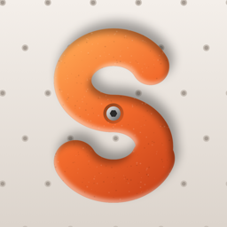

Sendlog
Registro de treinos de escalada e musculação
O Sendlog é um app para iPhone para registrar treinos de escalada (boulders, circuitos, repetições, boulder máximo), musculação, mobilidade e ativação, montar planos de treino e acompanhar sua evolução em painéis de grau, carga e força.
Perguntas frequentes
Vou perder meus treinos se trocar de celular?
Não. Seus treinos e planos são salvos no iCloud da sua conta Apple. No iPhone novo, entre com o mesmo Apple ID, instale o Sendlog e aguarde alguns instantes. Confira o status em Treinos › Ajustes (engrenagem).
Os dados do Apple Watch também vão para o iCloud?
Não. Calorias e frequência cardíaca lidas do app Saúde ficam só no seu iPhone, como exige a Apple. No celular novo, é só vincular os treinos do Apple Watch de novo.
Como uso os planos?
Na aba Planos, crie o treino uma vez (blocos, boulders, séries, cargas e notas) e escolha os dias da semana. No dia, o plano aparece em Treino de hoje, na aba Treinos: é só tocar em Começar.
Como apago meus dados?
Deslize um treino ou plano para a esquerda e toque em Apagar. Para apagar tudo do iCloud: Ajustes do iPhone › [seu nome] › iCloud › Gerenciar Armazenamento › Sendlog. Para revogar o acesso ao app Saúde: Ajustes › Saúde › Acesso a Dados e Dispositivos › Sendlog.
O app substitui um treinador ou profissional de saúde?
Não. O Sendlog não é um dispositivo médico. As análises são referências gerais de treino, não diagnóstico.
Contato
Dúvidas, sugestões ou problemas: matheusmsil.pro@gmail.com